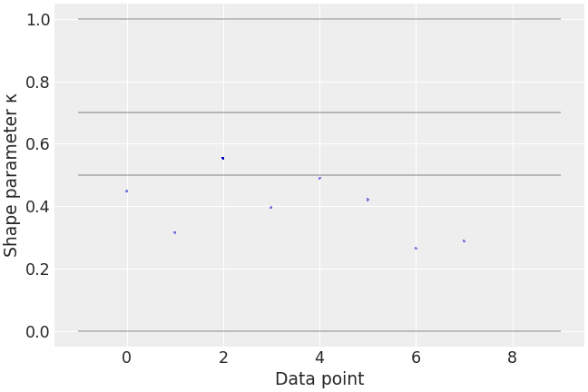

arviz.plot_khat¶
-
arviz.plot_khat(khats, figsize=None, textsize=None, markersize=None, ax=None, hlines_kwargs=None, **kwargs)[source]¶ Plot Pareto tail indices.
- Parameters
- khatsarray
Pareto tail indices.
- figsizetuple
Figure size. If None it will be defined automatically.
- textsize: float
Text size scaling factor for labels, titles and lines. If None it will be autoscaled based on figsize.
- markersize: int
markersize for scatter plot. Defaults to None in which case it will be chosen based on autoscaling for figsize.
- ax: axes, opt
Matplotlib axes
- hlines_kwargs: dictionary
Additional keywords passed to ax.hlines
- kwargs :
Additional keywords passed to ax.scatter
- Returns
- axaxes
Matplotlib axes.
Examples
Plot a default khat plot
>>> import arviz as az >>> centered_eight = az.load_arviz_data('centered_eight') >>> pareto_k = az.loo(centered_eight, pointwise=True)['pareto_k'] >>> az.plot_khat(pareto_k)
